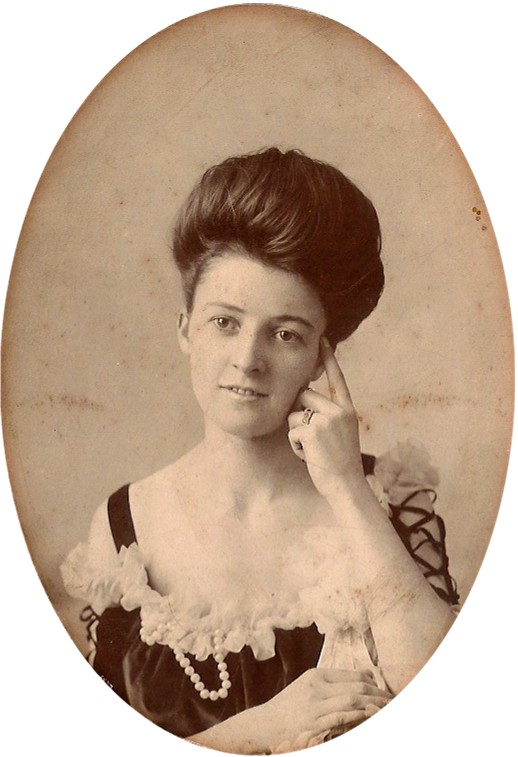
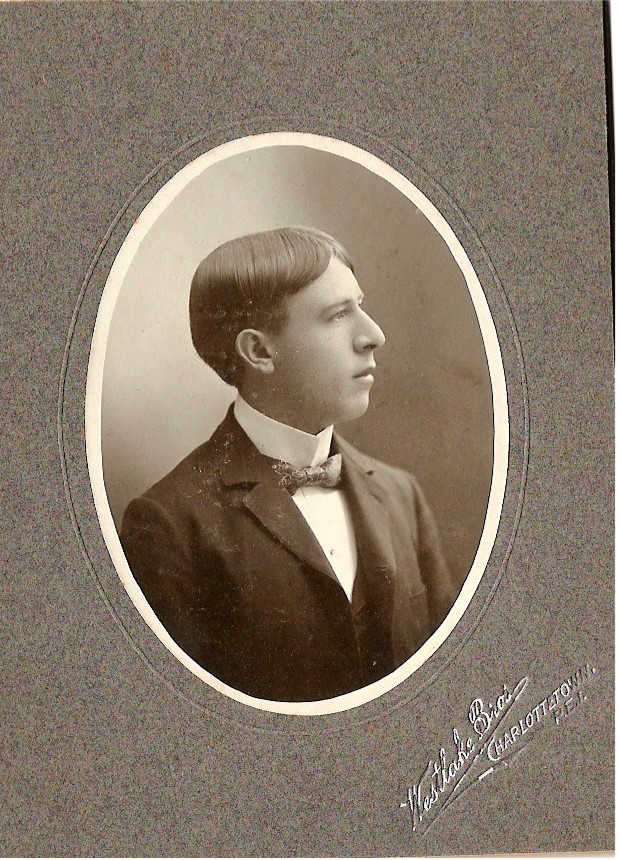

The Family Chronicle
No. 169 March 1, 2008
____________________________________________________________________

An undated photograph of “Edythe Watlin” from Caryl Savard

An undated photograph of Ambrose Watlin from Caryl Savard
Some Watling speculation
An email from Caryl Savard caused me to revisit my notes about my GGGrandfather, Jubal Watling who, according to family lore, lived on Prince Edward Island. (Readers who are really interested should review Family Chronicles 155-157) First some facts.
Jubal Watling was born in 1790 and, on November 10, 1814, married Susan Leach who was born 1792; names and dates of their offspring are given in Family Chronicle No. 157. Susan died in England in 1929 and is buried in Syleham, Suffolk, England.
I now believe that Jubal and his family came to PEI shortly after Susan died perhaps in 1830 but I do not have an exact date. PEI records show a Jubal Watling married Louisa (maiden name not given) on July 14, 1831.
The census of 1881 and 1891 show a Charles Watling living in Charlottetown; according to the census, he would have been born in 1846 or 1847 and could, therefore, have been a child of Jubal and Louisa. I have clippings that show Charles to have a son, Ambrose. Charles has other children but Ambrose provides the link in this scenario.
PEI Marriages, 1844-1852, p349 reports that Louisa Watling, a widow, married Willie Smith, a widower in October but the year was not given. The marriage was registered in 1848 so presumably the marriage was in October, 1847. If it is the same Louisa, Jubal must have died before that – between 1841 and 1847.
Enter Caryl Savard, a direct descendant of William and Louisa Smith; Caryl believes that Louisa and William were both originally from England. Caryl’s research finds that William and Louisa had at least two children: Margaret born on April 24, 1848 and Mary Ann born on August 15, 1851; they were both baptised on May 10, 1853.
Caryl has an album of early family photos and, in an Email to me on December 30 2008, she wrote:
“I found two pictures, one of Edythe and one of Ambrose. The name is Watlin on the back of each photo. On Edythe's it was written, To Aunt Maggie From Edythe Watlin, 1/2 2nd cousin. On the back of Ambrose's, it reads Ambrose Watlin, 1/2 2nd cousin.”
In my books that makes Edythe and Ambrose both children of Charles and, assuming that Charles is a child of Jubal and Louisa, and Margaret and Mary Anne are children of William and Louisa Smith (and that Louisa is the same person in both cases) Charles would be a half-brother of the two Smith girls.
If the above scenario is accurate, Margaret (Maggie) Smith would be an Aunt to Ambrose and Edythe hence the note on the back of the photo. (Although I do not understand the reference to ½ second cousin.) I realize that the connection is circumstantial but believe that it is more than coincidental.
Watling is relatively rare name and Jubal even rarer, the actual names on the photos and the reference to Aunt Maggie – all strong but not conclusive. A negative is Jubal’s age – he would have been 41 when he married and in his late 50’s and early 60’s when the children were born. The birth of Charles in 1847, marriage of Louisa and William in 1847 and birth of Margaret in 1848 presents a tight but not impossible schedule. Readers probably know the expression that “the first child can be born any time but after that it usually takes nine months”.
If this thinking is correct, Grandfather Jubal, married to Christina MacNaughton would be a half-brother to Charles and any descendants of Charles would be my/our cousins. Needless to say, I find this an interesting turn of events and will keep you posted of anything new that comes to hand.
The Family Chronicle (Copyright) is an occasional newsletter published by Don Glendenning and posted on the family website. It is intended to share information about my family, community and the times in which I grew up. While every effort is made to be accurate, errors are likely to occur. Comments, enquiries and information may be sent to 62 Queen Elizabeth Drive, Charlottetown, PEI, C1A 3A9. Tel: 902 892 5859. Email: don@glendenning.net Web: www.glendenning.net/don